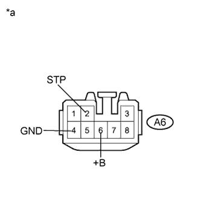
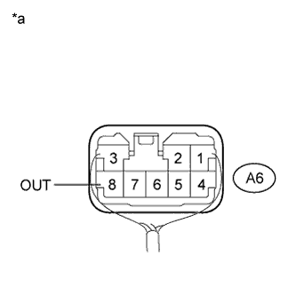

STOP LIGHT CONTROL RELAY > INSPECTION |
| 1. INSPECT STOP LIGHT CONTROL RELAY ASSEMBLY |
|  |
Disconnect the A6 stop light control relay connector.
Measure the voltage according to the value(s) in the table below.
| Tester Connection | Condition | Specified Condition |
| A6-2 (STP) - Body ground | Brake pedal released | Below 1 V |
| Brake pedal depressed | 11 to 14 V | |
| A6-6 (+B) - Body ground | Always | 11 to 14 V |
Measure the resistance according to the value(s) in the table below.
| Tester Connection | Condition | Specified Condition |
| A6-4 (GND) - Body ground | Always | Below 1 Ω |
| *a | Front view of wire harness connector (to Stop Light Control Relay Assembly) |
|  |
Reconnect the A6 stop light control relay connector.
Measure the voltage according to the value(s) in the table below.
| Tester Connection | Condition | Specified Condition |
| A6-8 (OUT) - Body ground | Brake pedal released | Below 1 V |
| Brake pedal depressed | 11 to 14 V |
| *a | Front view of wire harness connector (to Stop Light Control Relay Assembly) |